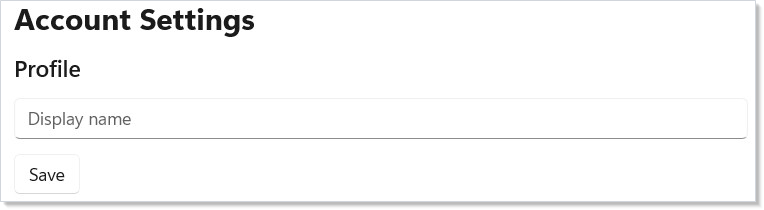
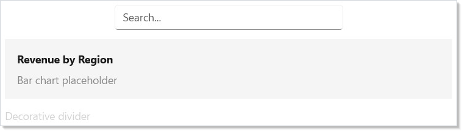
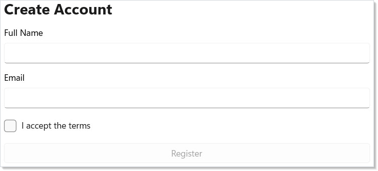
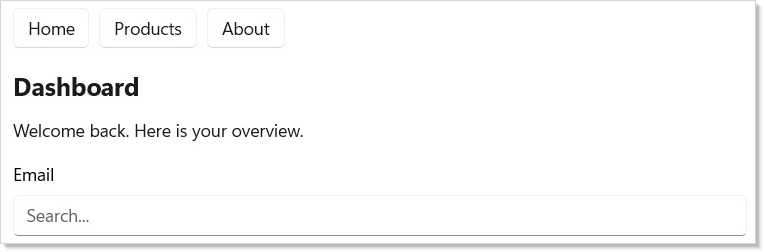
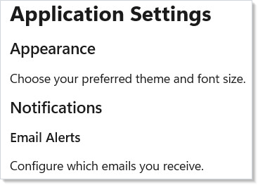
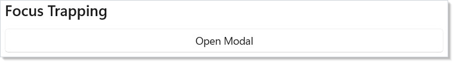
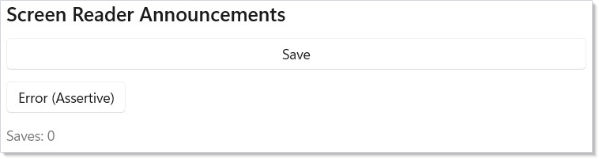
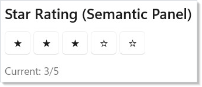

Microsoft.UI.Reactor (Reactor)'s accessibility surface is two layers: modifiers that map to
WinUI automation properties (.AutomationName, .HeadingLevel,
.Landmark, .LiveRegion, .TabIndex, .AccessKey) and hooks that
add runtime behavior (UseFocusTrap for modal focus trapping,
UseAnnounce for live-region announcements, SemanticPanel for
custom automation peers that the modifier set can't express). The
analyzer set is the third layer — REACTOR_A11Y_001..004 catch the
most common omissions (icon-only buttons missing an automation
name, images missing alt text, form fields missing a label, and
clickable containers that aren't keyboard-reachable) at
compile time. The AccessibilityScanner is the runtime cousin: it
walks the post-reconciliation element tree and emits 8 categories of
WCAG-mapped diagnostics with concrete fix suggestions. Aim for clean
analyzer output as you type, clean scanner output before merge, and
Narrator tab-through as the final manual check. Read Tier 1
Modifiers first — those five modifiers cover most
production cases; everything else on this page is for the
non-trivial 20%.
Accessibility¶
Reactor provides accessibility modifiers on every component. They map directly to WinUI's automation properties, so screen readers, keyboard navigation, and test tools work out of the box. Modifiers are split into two tiers based on how often you need them.
Reference¶
| Surface | Where it lives | What it does |
|---|---|---|
| Tier 1 modifiers | .AutomationName, .HeadingLevel, .TabIndex, .AccessKey, .IsTabStop |
Inline on every render — labels, headings, keyboard order. |
| Tier 2 modifiers | .HelpText, .FullDescription, .AccessibilityHidden, .AccessibilityView, .Landmark, .Required, .LiveRegion |
Lazy-allocated; descriptions, landmarks, hidden subtrees, regions. |
| Relationship refs | .LabeledBy(ref), .DescribedBy(refs...), .FlowsTo(refs...), .FlowsFrom(refs...) |
Reactive AutomationProperties relationships between realized elements. |
UseFocusTrap(isActive) |
hook | Returns a FocusTrapHandle; apply with .FocusTrap(handle) on a container. |
UseAnnounce() |
hook | Returns an AnnounceHandle with .Region (zero-size element) and .Announce(message, assertive?). |
SemanticPanel |
wrapper | Custom automation peer (role / value / range) for composites. |
AccessibilityScanner.Scan(root) |
static | Post-render runtime diagnostic — 8 WCAG checks with fix suggestions. |
REACTOR_A11Y_001 |
analyzer | Icon-only Button(icon, action) without .AutomationName(). |
REACTOR_A11Y_002 |
analyzer | Image() without .AutomationName() or .AccessibilityHidden(). |
REACTOR_A11Y_003 |
analyzer | Form field without header: or label modifier. |
REACTOR_A11Y_004 |
analyzer | Clickable container (Border/Grid/Canvas/Rectangle/Ellipse/VStack/HStack) with .OnTapped but no enabling .IsTabStop(true). |
Tier 1 Modifiers¶
Tier 1 modifiers are the ones you use constantly: labels, headings, tab order, and keyboard shortcuts. They are applied inline on every render — no lazy allocation.
class Tier1Demo : Component
{
public override Element Render()
{
return VStack(12,
TextBlock("Account Settings")
.FontSize(24).Bold()
.HeadingLevel(AutomationHeadingLevel.Level1),
TextBlock("Profile")
.FontSize(18).SemiBold()
.HeadingLevel(AutomationHeadingLevel.Level2),
TextBox("", _ => { }, placeholderText: "Display name")
.AutomationName("Display name")
.TabIndex(1)
.AccessKey("N"),
Button("Save", () => { })
.AutomationName("Save profile changes")
.TabIndex(2)
.AccessKey("S")
).Padding(24);
}
}

Here is what each modifier does:
.HeadingLevel()marks an element as a heading (Level1 through Level9). Screen reader users navigate by heading, just likeh1--h6in HTML..AutomationName()sets the accessible label. Use it when the visible text does not fully describe the control's purpose..TabIndex()sets the tab order. Lower values receive focus first..AccessKey()assigns an Alt+key shortcut. WinUI shows the key hint when the user presses Alt..IsTabStop()controls whether the element participates in Tab navigation at all.
Tier 2 Modifiers¶
Tier 2 modifiers cover supplemental information, landmarks, and visibility control. They are lazy-allocated — Reactor only creates the backing storage when you use them, keeping the common case lightweight.
class Tier2Demo : Component
{
public override Element Render()
{
return VStack(12,
TextBox("", _ => { }, placeholderText: "Search...")
.AutomationName("Search products")
.HelpText("Type a product name or SKU to filter results")
.Width(300),
VStack(8,
TextBlock("Revenue by Region").Bold(),
TextBlock("Bar chart placeholder").Opacity(0.5)
).FullDescription(
"Bar chart showing Q1 revenue: East $4.2M, " +
"West $3.8M, Central $2.1M")
.Padding(16).Background("#f5f5f5").CornerRadius(8),
TextBlock("Decorative divider")
.Opacity(0.2)
.AccessibilityHidden()
).Padding(24);
}
}

| Modifier | Purpose |
|---|---|
.HelpText() |
Extra hint read after the name |
.FullDescription() |
Extended description for complex visuals |
.AccessibilityHidden() |
Hide decorative elements from the tree |
.AccessibilityView() |
Content, Control, or Raw visibility |
.Landmark() |
Main, Navigation, Search, Form, Custom |
.Required() |
Announces "required" for form fields |
.LiveRegion() |
Announces dynamic content changes |
The tiered design means you pay zero cost for Tier 2 on elements that only need a label and heading level.
Relationship reference properties¶
Some accessibility properties point at another realized element rather
than a string. Use ElementRef<FrameworkElement> for those
relationships:
var label = UseElementRef<FrameworkElement>();
var help = UseElementRef<FrameworkElement>();
return VStack(4,
TextBlock("Email").Ref(label),
Caption("Use your work address.").Ref(help),
TextBox(email, setEmail)
.LabeledBy(label)
.DescribedBy(help));
.LabeledBy(ref) writes AutomationProperties.LabeledBy.
.DescribedBy(refs...), .FlowsTo(refs...), and
.FlowsFrom(refs...) rebuild the corresponding
IList<DependencyObject> in declaration order, omitting unresolved
targets. Because these are reactive reference edges, the relationship
survives mount order differences, source unmounts, and referrer
recreation: when either side is recreated the edge re-subscribes and
re-applies after the commit. This is the preferred form when screen
reader relationships span containers; use the string .LabeledBy(id)
only for static AutomationId relationships.
Accessible Form¶
A real form combines Tier 1 and Tier 2 modifiers. Labels, required markers, help text, landmarks, and tab order work together:
class AccessibleFormDemo : Component
{
public override Element Render()
{
var (name, setName) = UseState("");
var (email, setEmail) = UseState("");
var (agree, setAgree) = UseState(false);
var valid = !string.IsNullOrWhiteSpace(name)
&& email.Contains('@') && agree;
return VStack(12,
TextBlock("Create Account").FontSize(24).Bold()
.HeadingLevel(AutomationHeadingLevel.Level1),
TextBox(name, setName, header: "Full Name")
.AutomationName("Full name").Required().TabIndex(1),
TextBox(email, setEmail, header: "Email")
.AutomationName("Email address").Required().TabIndex(2)
.HelpText("We'll send a verification link"),
CheckBox(agree, setAgree, label: "I accept the terms")
.TabIndex(3),
Button("Register", () => { })
.IsEnabled(valid).TabIndex(4).AccessKey("R")
).Landmark(AutomationLandmarkType.Form).Padding(24);
}
}

The form container uses .Landmark(AutomationLandmarkType.Form) so screen
reader users can jump directly to it. Each field has .AutomationName() for
its label, .Required() for required fields, and .TabIndex() for
predictable keyboard order. The email field adds .HelpText() to explain
what happens after submission.
Navigation Landmarks¶
Landmarks let screen reader users jump between major page regions. Use them on your navigation bar, main content area, and search box:
class LandmarksDemo : Component
{
public override Element Render()
{
return VStack(16,
HStack(8,
Button("Home", () => { }),
Button("Products", () => { }),
Button("About", () => { })
).Landmark(AutomationLandmarkType.Navigation)
.AutomationName("Main navigation"),
VStack(12,
TextBlock("Dashboard")
.FontSize(20).Bold()
.HeadingLevel(AutomationHeadingLevel.Level1),
TextBlock("Welcome back. Here is your overview.")
).Landmark(AutomationLandmarkType.Main)
.AutomationName("Main content"),
TextBox("", _ => { }, placeholderText: "Search...")
.AutomationName("Site search")
.Landmark(AutomationLandmarkType.Search)
).Padding(24);
}
}

WinUI supports five landmark types: Navigation, Main, Search, Form,
and Custom. Pair each landmark with .AutomationName() so screen readers
announce "Main navigation" rather than just "navigation."
Heading Hierarchy¶
A clear heading structure lets screen reader users skim your page. This pairs
well with your layout hierarchy. Use Level1 for the page
title, Level2 for sections, and Level3 for subsections:
class HeadingHierarchyDemo : Component
{
public override Element Render()
{
return VStack(12,
TextBlock("Application Settings")
.FontSize(24).Bold()
.HeadingLevel(AutomationHeadingLevel.Level1),
TextBlock("Appearance")
.FontSize(18).SemiBold()
.HeadingLevel(AutomationHeadingLevel.Level2),
TextBlock("Choose your preferred theme and font size."),
TextBlock("Notifications")
.FontSize(18).SemiBold()
.HeadingLevel(AutomationHeadingLevel.Level2),
TextBlock("Email Alerts")
.FontSize(15).SemiBold()
.HeadingLevel(AutomationHeadingLevel.Level3),
TextBlock("Configure which emails you receive.")
).Padding(24);
}
}

Keep your heading levels sequential — do not skip from Level1 to Level3. Screen readers use the hierarchy to build a page outline, and gaps confuse users.
Focus Trapping¶
UseFocusTrap locks keyboard focus inside a container — essential for modal
dialogs and flyouts. When active, Tab and Shift+Tab cycle within the
trapped subtree and cannot escape:
class FocusTrapDemo : Component
{
public override Element Render()
{
var (showModal, setShowModal) = UseState(false);
var trap = this.UseFocusTrap(showModal);
return VStack(12,
SubHeading("Focus Trapping"),
Button("Open Modal", () => setShowModal(true)),
When(showModal, () =>
Border(
VStack(12,
TextBlock("Modal Dialog").FontSize(18).Bold(),
TextBlock("Tab/Shift+Tab stays inside this panel."),
TextBox("", _ => { }, placeholderText: "Name")
.TabIndex(0),
Button("Close", () => setShowModal(false))
.TabIndex(1)
).Padding(24)
).WithBorder("#888", 1)
.CornerRadius(8)
.Background("#ffffff")
.FocusTrap(trap)
)
).Padding(24);
}
}

Create a FocusTrapHandle with UseFocusTrap(isActive). Apply it to a
container with .FocusTrap(handle). When isActive is true, focus wraps
within the subtree; when false, normal tab behavior resumes.
Use focus trapping for any overlay that should prevent interaction with
background content: modal dialogs, confirmation sheets, and dropdown menus.
For a complete dialog pattern that combines UseFocusTrap with
ContentDialog, see the
modal-dialog recipe.
Caveat:
UseFocusTrapguards itsLosingFocushandler against three "no sensible container" states —IsLoaded == false,Visibility != Visible, and!IsHitTestVisible. Outside those guards, the trap keeps eating focus changes for as long as the handle saysIsActive. The classic failure: anWhen(isOpen, () => ...)modal whosesetOpen(false)runs first (unmounting the trapped container) and then flipsisActiveto false on the next render — between the two,Tabfrom outside the now-removed container still matches the stale handle andargs.Cancel = truewedges focus on a neighboring page element. Always flipisActiveto false in the same state batch that unmounts the container, or apply the trap to an element that stays in the tree across the open/closed transition (an always-mounted overlay with.IsVisible(open)rather thanWhen(open, ...)).
Screen Reader Announcements¶
UseAnnounce sends programmatic announcements to screen readers via live
regions (WCAG 4.1.3). Use it to notify users of dynamic state changes that
are not visible in the focus path:
class AnnouncementsDemo : Component
{
public override Element Render()
{
var (count, setCount) = UseState(0);
var announce = this.UseAnnounce();
return VStack(12,
SubHeading("Screen Reader Announcements"),
Button("Save", () =>
{
setCount(count + 1);
announce.Announce($"Document saved ({count + 1} times)");
}),
Button("Error (Assertive)", () =>
announce.Announce("Connection lost!", assertive: true)),
TextBlock($"Saves: {count}").Opacity(0.6),
announce.Region // invisible live region — must be in tree
).Padding(24);
}
}

Create an AnnounceHandle with UseAnnounce(). Include announce.Region
somewhere in your element tree — it renders an invisible live region. Then
call announce.Announce(message) for polite announcements (queued after
current speech) or announce.Announce(message, assertive: true) to
interrupt.
Calling Announce before Region has been mounted is a silent no-op —
the handle holds an internal TextBlock? that the modifier pipeline
fills in OnMount. If a UseEffect with [] deps fires
an Announce immediately on mount, the live region may not have wired
up yet; defer the first announcement by a dispatcher tick or trigger
it from onNavigatedTo.
Common use cases: form submission confirmations, async operation completions, error messages, and timer-based status updates.
Semantic Panel¶
SemanticPanel wraps a child element to provide custom automation metadata
that Reactor components cannot expose directly (since they are C# records, not
WinUI controls with overridable automation peers):
class SemanticPanelDemo : Component
{
public override Element Render()
{
var (rating, setRating) = UseState(3);
// .Semantics() wraps the element in a SemanticPanel so
// screen readers announce it as a slider, not raw buttons
return VStack(12,
SubHeading("Star Rating (Semantic Panel)"),
HStack(4, Enumerable.Range(1, 5).Select(i =>
Button(i <= rating ? "\u2605" : "\u2606",
() => setRating(i))
.AutomationName($"{i} star{(i == 1 ? "" : "s")}")
).ToArray())
.Semantics(
role: "slider",
value: $"{rating} of 5 stars",
rangeMin: 1, rangeMax: 5, rangeValue: rating),
TextBlock($"Current: {rating}/5").Opacity(0.6)
).Padding(24);
}
}

| Property | Purpose |
|---|---|
SemanticRole |
Automation role (e.g., "slider") |
SemanticValue |
Current value reported to assistive tech |
RangeMinimum / RangeMaximum |
Numeric range for range-value patterns |
RangeValue |
Current numeric position in the range |
IsReadOnly |
Whether the value can be changed |
Use SemanticPanel for custom controls like star ratings, progress
indicators, or any composite widget that needs a specific automation role
beyond what WinUI infers from its visual tree.
Accessibility Scanner¶
AccessibilityScanner is a post-reconciliation diagnostic tool that walks
the element tree and flags common accessibility issues. Run it during
development or in CI to catch violations early:
// Run AccessibilityScanner during development or CI:
//
// var diagnostics = AccessibilityScanner.Scan(rootElement);
// foreach (var d in diagnostics)
// {
// Console.WriteLine($"[{d.Severity}] {d.Message}");
// Console.WriteLine($" WCAG: {d.WcagCriterion}");
// Console.WriteLine($" Fix: {d.Fix?.Modifier}({d.Fix?.SuggestedValue})");
// }
//
// Export structured JSON for CI integration:
// AccessibilityScanner.ExportJson(diagnostics, "a11y-report.json");
The scanner checks for 8 common issues:
| Check | WCAG Criterion |
|---|---|
| Icon buttons without AutomationName | 4.1.2 Name, Role, Value |
| Images without alt text | 1.1.1 Non-text Content |
| Form fields without labels | 1.3.1 Info and Relationships |
| Heading-styled text missing HeadingLevel | 1.3.1 Info and Relationships |
| Concrete brushes on interactive controls | 1.4.11 Non-text Contrast |
| Missing Main landmark | 1.3.1 Info and Relationships |
| TabIndex gaps | 2.4.3 Focus Order |
| Unresolved LabeledBy references | 1.3.1 Info and Relationships |
Each A11yDiagnostic includes a Fix suggestion with the exact modifier
and value to add. Export to JSON with AccessibilityScanner.ExportJson().
Roslyn Analyzers¶
Reactor ships four compile-time accessibility analyzers that flag violations as you type in your IDE:
| Diagnostic ID | Rule |
|---|---|
REACTOR_A11Y_001 |
Icon-only Button(icon, action) calls without .AutomationName() |
REACTOR_A11Y_002 |
Image() without .AutomationName() or .AccessibilityHidden() |
REACTOR_A11Y_003 |
TextBox/NumberBox/PasswordBox without header: arg or label modifier |
REACTOR_A11Y_004 |
Clickable Border/Grid/Canvas/Rectangle/Ellipse/VStack/HStack (.OnTapped) without an enabling .IsTabStop(true) |
These analyzers run automatically when you reference the Reactor.Analyzers
package. They complement the runtime AccessibilityScanner by catching the
most common violations at compile time. The analyzer architecture itself is
documented in Analyzer Architecture under the
Under-the-hood track.
Patterns¶
Modal dialog with focus trap and announcement¶
The standard accessible modal combines three primitives: a controlled
isOpen boolean, a UseFocusTrap keyed on it, and a
UseAnnounce that announces "Dialog opened" on first render and
"Dialog closed" on dismiss. The trap container should stay mounted
across the open/closed transition (use .IsVisible(open) not
When(open, ...)) so focus is released cleanly when isActive
flips false — see the caveat above. The
modal-dialog recipe wires all three end
to end against ContentDialog.
Toast / status updates¶
Application-wide live announcements (save succeeded, connection
restored, error toast) belong on a single AnnounceHandle hoisted to
the app root and shared through context. Each surface
that wants to announce reads it with UseContext and calls
announce.Announce(message). The single live region keeps WCAG 4.1.3
satisfied without sprinkling regions through the tree, and message
ordering is sequential because the underlying
RaiseNotificationEvent queues at the automation peer.
Custom-control semantics¶
Composite controls (a star rating built from Button children, a
custom toggle group, a draggable slider) need a single automation node
that says "this is a slider, the value is 3 of 5". Wrap the composite
in SemanticPanel { SemanticRole = "slider", RangeMinimum = 1,
RangeMaximum = 5, RangeValue = rating }. Mark the child buttons
.AccessibilityHidden() so screen readers see one node, not five — the
hidden modifier removes the descendants from the automation tree but
keeps them keyboard- and pointer-interactive.
Common Mistakes¶
Disabled Submit with no .IsDisabledFocusable()¶
A disabled button is removed from the Tab order. The user fixes the
last field, presses Tab to reach Submit, focus skips past the still-
disabled button, and they're stranded with no keyboard route. Use
.IsDisabledFocusable(!form.IsValid) on the button — it keeps the
button keyboard-focusable while presenting as disabled. The
Forms page covers the full
shape (it composes with .Immediate() on commit-on-blur inputs).
AccessibilityHidden on a focusable element¶
.AccessibilityHidden() only affects the automation tree — keyboard
focus and pointer hit-testing still work. The result is a button the
user can Tab to and click but a screen reader user cannot discover.
If the control should not be exposed to assistive tech, it should
not exist for keyboard users either; use .IsEnabled(false) or pull it
from the tree with When(...). Use .AccessibilityHidden() only on
decorative elements that don't accept focus (icons, ornamental
borders, redundant labels).
Heading levels skipped or out of order¶
// Don't:
TextBlock("Page Title").HeadingLevel(Level1),
TextBlock("Subtle Detail").HeadingLevel(Level4)
Screen readers build a page outline by walking heading levels in
order; gaps confuse navigation (NVDA's "next heading at level 2"
silently fails). Promote the second heading to Level2 or demote
the first to match the structure. Treat heading levels like HTML —
h1 once per page, h2 for sections, h3 for subsections.
Tips¶
Label every interactive control. If the visible text is sufficient, WinUI
infers the name automatically. Use .AutomationName() when it is not — icon
buttons, image buttons, and controls with placeholder-only text all need it.
Use .Required() instead of asterisks. Screen readers announce "required"
automatically. Visual asterisks are invisible to assistive technology unless
you also set the automation property.
Test with Narrator. Press Win+Ctrl+Enter to launch Narrator and tab through your app. Every control should announce its name, role, and state.
Keep landmarks minimal. One Main, one Navigation, and optionally one
Search per page. Too many landmarks defeat the purpose — users cannot
quickly jump when every section is a landmark.
Set .AccessKey() on frequent actions. Alt+S for Save, Alt+N for New.
WinUI renders the key tips automatically when the user presses Alt.
Next Steps¶
- Context — previous topic: share state across the tree without prop drilling
- Localization — next topic: translate strings, format numbers/dates, and support RTL layouts
- Forms and Input — build accessible forms with labels, validation, and tab order
- Navigation — add landmarks and keyboard-navigable page structure
- Styling and Theming — ensure high-contrast themes work with your accessible controls
- Dialogs and Flyouts — focus traps and ARIA semantics for modal surfaces
- Analyzer Architecture — how
REACTOR_A11Y_001..004are authored - WinForms Interop — accessibility bridging between WinForms and Reactor